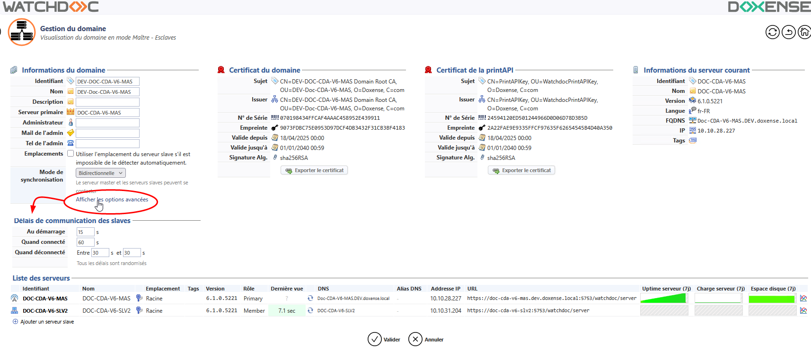

Principe
Dans une architecture comportant un serveur master et d'autres serveurs, l'ensemble des serveurs Watchdoc communiquent entre eux.
En particulier, le serveur master communique vers les autres serveurs de Watchdoc pour leur envoyer sa configuration lors des synchronisations.
Le mode de synchronisation par défaut est bidirectionnel.
Cependant, un autre mode peut être activé : le mode MailBox.
Dans le cas de sites distants reliés par un réseau Internet ne disposant pas de VPN, la communication du server master vers les autres serveurs de Watchdoc n'est pas possible car elle présente une faille de sécurité.
Pour gérer ce cas de figure, la synchronisation peut être forcée en mode unidirectionnel (mailbox).
Dans ce mode, un serveur slave Watchdoc appelle le master et ce dernier peut alors répondre dans la session de communication établie par le serveur slave.
Procédure
Configurer le mode de synchronisation
-
Dans l'interface Gestion du domaine, section Informations du domaine, sélectionnez le Mode de synchronisation ;
-
pour le mode unidirectionnel (Mailbox), cliquez sur Afficher les options avancées pour compléter le paramétrage :
-
mode de stockage : définissez le mode de stockage des ordres de synchronisation :
-
en mémoire : permet de stocket temporairement les ordres de synchronisation ;
-
sur disque : permet de ne pas perdre les information lors d'un redémarrage du service Watchdoc.
-
-
opérations par minute : définissez le nombre maximum de configuration et de synchronisation des drivers par minute de manière à éviter la saturation du serveur master ;
-
Gestion du rafraîchissement : indiquez les temps d'attente entre les appels des serveur slaves au serveur master :
-
Temps d'attente maximal : saisissez le temps d'attente maximal qui s'écoule entre 2 requêtes envoyées par un serveur au master ;
-
Temps d'attente minimal : saisissez le temps d'attente minimal qui s'écoule entre 2 requêtes envoyées par un serveur au master ;
-
Augmenter le temps d'attente : permet de saisir des valeurs qui instaurent un mode aléatoire dans le lancement des requêtes envoyées au master.
-
-
{kind=link}
Configurer les délais de communication
La gestion en domaine génère un grand nombre de communications entre le serveur master et les autres serveurs.
Il arrive que ce grand nombre de communications simultanées provoque des latences de réponses du serveur entraînant des perturbations dans le traitement des travaux d'impression.
En cas de perturbations de ce genre, modifiez les délais de communications des serveurs avec le serveur master :
-
cliquez sur le lien "Afficher les options avancées" :
-
saisissez les délais de communication des serveurs souhaités :
-
Au démarrage : au démarrage du serveur slave, délai d'attente avant que le serveur ait le droit de le contacter le serveur master ;
-
Quand connecté : lorsqu'une communication est établie entre le serveur master et le serveur slave, délai entre 2 communications pour se synchroniser ;
-
Quand déconnecté : lorsque le serveur est déconnecté du serveur master, intervalle durant lequel il peut recontacter le serveur master pour rétablir la connexion et se synchroniser :

-
{kind=link}